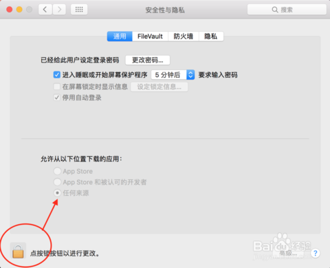

个人联系方式
若使用过程中遇到什么问题可以联系QQ: 2994787342
安装说明
因本人并没有开发者id，故软件会被系统认定为“来历不明”的软件，但请放心安装，没事的_(:з」∠)_
自动更新问题
- 打开软件时会进行更新检查，若因为误触导致取消了更新，请重新打开软件
- 若下载速度过慢/卡顿，可以尝试关闭后尝试重新下载。
- 手动更新方式，在Github仓库中下载最新的版本
下载
请前往我的Github仓库下载最新的版本，里面也记录了以往的历史版本。

Windows安装
直接安装即可，忽略风险提示~
Mac安装
不出意外下载后打开会出现这个情况”应用打不开或提示损坏怎么办“， 解决办法如下
打开终端（在实用工具中找到），并输入以下命令以开启外部来源应用的权限。
sudo spctl --master-disable打开系统偏好设置
找到安全与隐私策略
解锁后将允许的应用来源设置为任何来源。这样设置完后，不被允许打开的应用就可以正常打开使用了。
